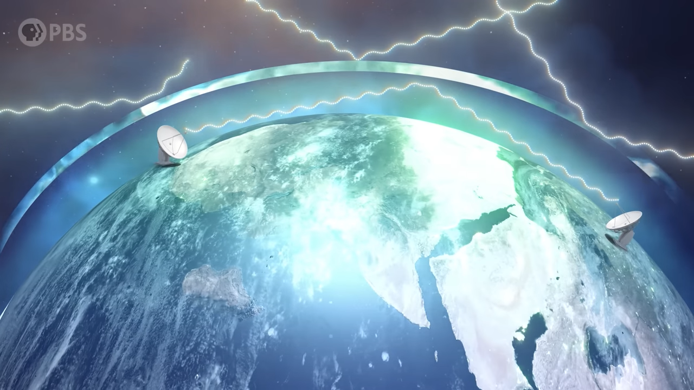

Radio Waves
Moon Telescope - PBS: Radio photons with wavelengths ~1 cm to 10m can pass thorough the atmosphere, but higher wavelengths radio waves are reflected by the ionosphere.
Ionosphere acts as double sided radio mirror for out planet. This allows radio communication across the surface of earth but also blankets us from outside radio waves.

Figure 1: Ionosphere Bouncing off Radio Waves